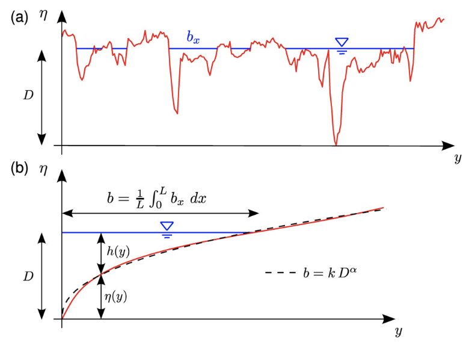
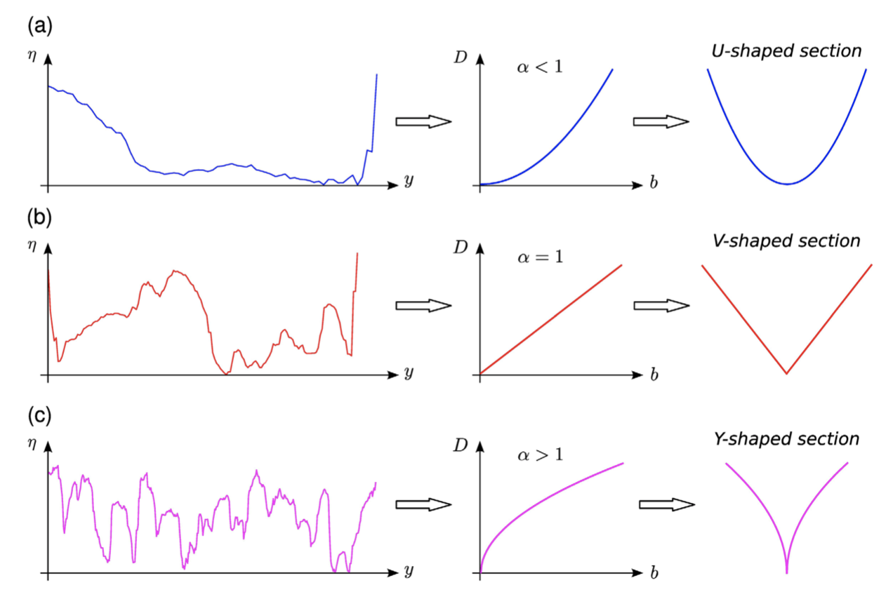
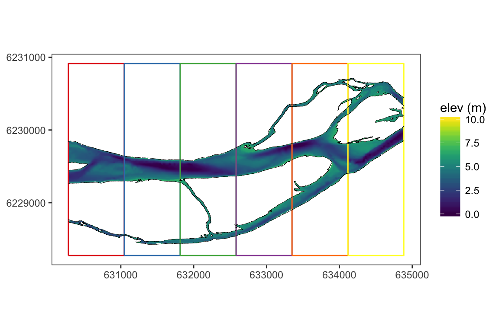
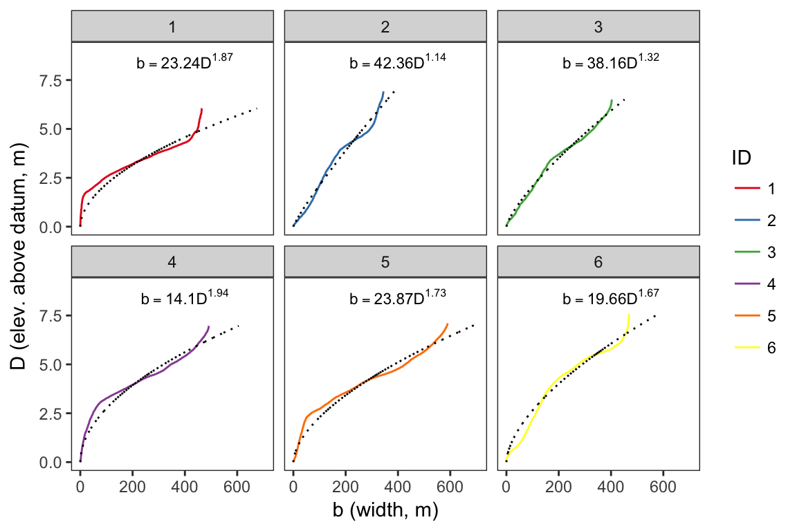
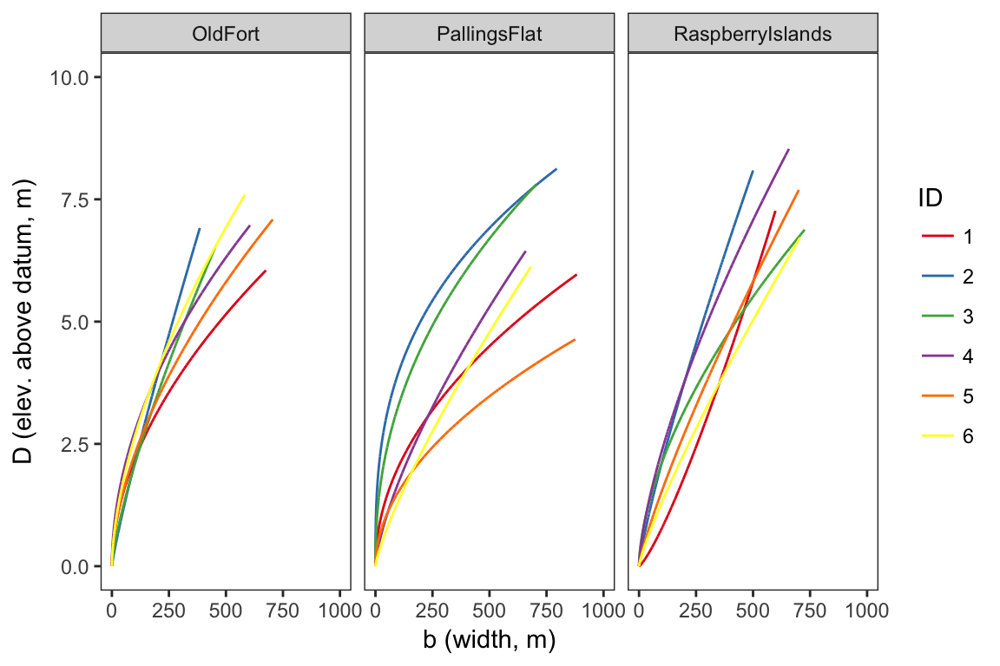

Characterizing and interpreting fluvial forms is a fundamental component of river research and management. High resolution, spatially continuous topographic information is becoming increasingly common, but appropriate methods and tools are needed to analyze and leverage it properly. In this paper, we test the applicability of the simple morphologic indicator of reach-scale elevation distributions proposed by Redolfi et al. (2016) to assess the morphology of Peace River, with a focus on differentiating reaches in terms of physical form and resultant hydraulics. We then extend the method to an analysis of fish stranding risk under changing flow levels by examining variability in wetted width between different reach morphologies. Results are compared with other conventional terrain analyses as well as detailed 2-dimensional flow model results for an overall evaluation of the utility of the morphologic indicator as a potential framework for stratification and monitoring on Peace River and other large regulated rivers.
Redolfi et al. (2016) propose extending the traditional concept of a single transverse river cross section to a reach-scale “average cross section” considering the entire reach topography, inspired out of a desire to examine the key geomorphic drivers that set channel form by using a parsimonious, intuitive, purely geometric model. The approach is based on a frequency distribution of bed elevations (in a similar manner to hypsometric analyses often applied at a watershed scale) that integrates the spatial variability evident in topographically diverse single- and multi-thread rivers.
Figures 1 demonstrates the definition of a reach-averaged width-depth \(b(D)\) curve in a given section as put forward in Redolfi et al. (2016). Elevations below a given water surface stage are measured with respect to the lowest elevation in the section, and free surface widths are calculated for each elevation. The cumulative \(b(D)\) curve can then be conveniently approximated with a power law fit \(b = kD^\alpha\), where \(k\) defines the scale of the width and \(\alpha\) characterizes the shape of the averaged cross section.

Figure 1: [From Redolfi et al. (2016)] (a) Example of a single cross section with the definition of the width bx as a function of the elevation \(D\) with respect to the lowest point; and (b) example of the reach-averaged \(b(D)\) curve, obtained by integrating bx along a reach of length \(L\). The dashed line is the power law approximation of the curve; \(n\) and \(h\) indicate bed elevation and flow depth along the transverse direction \(y\).

Figure 2: [From Redolfi et al. (2016)] Three characteristic cross-section types (left) and corresponding (middle) reach-scale \(b(D)\) curves and (right) average section. (a) Concave upward shape; (b) triangular shape; (c) concave downward shape, with a indicating the exponent of the power law.
Redolfi et al. (2016) focus on the utility of the \(\alpha\) exponent of the power law fit as a key parameter or “morphologic indicator” that can differentiate the role of longitudinal slope, grain size, discharge, and vegetation or confinement effects on the morphology of rivers. Figure 2 portrays several channel morphology archetypes, their dissolution into \(b(D)\) curves, and their representations as statistically averaged cross sections, each with \(\alpha\) values reflecting different topographic complexities. Through their analysis, the authors demonstrate the indicator’s potential applications to estimates of reach-averaged shear stress distributions, bedload flux, and at-a-station variability in wetted width, achieved by using the spatially averaged section as the topographic boundary condition for a simple uniform flow model.
Given the simplicity of the model and the wide range of geomorphic and hydraulic extensions, it is useful to test as a descriptor of channel form on a large regulated river like the Peace. Objectively classified reach morphologies could potentially be integrated into sampling efforts and applied at any scale of interest. This understanding of geomorphic forms can then be used as a hierarchical framework for interpreting and spatial scaling/extrapolation of river monitoring studies including fish hydraulic habitat availibility, fish stranding risk during flow reductions, or assessments of longer-term geomorphic adjustments. In this report, we demonstrate some initial applications of the approach to Peace River, outline future research directions, and address potential practical/logistical application issues or extensions.
The morphologic indicator approach was first tested at a mainstem reach of Peace River near the town of Old Fort. The topography of a five-kilometer reach (representing the pre dam construction configuration) was reconstructed with a combination of bare-earth LiDAR, manual GPS surveys and bathymetric sounding. Point values from disparate sources were merged and interpolated to a 10m raster, which was masked to only include elevations below the highest water level. The DEM was then detrended with respect to valley slope to highlight within-channel variability, and the reach was discretized into segments defined by polygons with along-channel lengths equivalent to approximately one channel width (Figure 3).

Figure 3: Old Fort active channel DEM. Elevations are detrended and normalized relative to the lowest elevation in the reach. Sample polygons are overlain.

Figure 4: Average section \(b(D)\) curves, showing both the empirical distribution of elevations (solid, colored lines) and the fitted power law approximations (dotted lines).
The results from Figure 4 demonstrate the utility in the approach of hightlighting channel shape differences. Of the six average sections analyzed, there is significant variability in the shape of the empirical curves and the fitted power laws. Average sections with relatively high \(\alpha\) values such as #1, #4, and #5 can be interpreted as having greater topographic complexity (in this case, produced largely by the presence of side channels) compared to more dominantly single-thread average sections such as #2, where \(\alpha\) is close to 1, indicating a simpler V- or U-shaped channel.

Figure 5: Power law fits for average sections from three geomorphically distinct reaches on Peace River.
Comparing the geomorphic indicator approach between geographically separated reaches of Peace River also highlights potential geomorphic differences. In general, the Pallings Flat average sections exhibit the most topographic diversity and higher \(\alpha\) values. This is likely indicative of the lower slope of the reach, with several average sections showing a flat, wide configuration that is likely to have a greater proportion of large zones at risk of being dewatered quickly and potentially stranding fish. The shape of the Raspberry Islands sections is more similar to the Old Fort reach with several V-shaped or U-shaped sections, although some areas with higher \(\alpha\) exponents (e.g. average section #3) are still present. More detailed analysis of the individual sections and the general controls on reach morphology on Peace River is needed to dig into the specifics, but at present, the geomorphic indicator approach seems to provide a useful framework within which to interpret channel hydrogeomorphology.
The analysis presented herein is based on code implemented in R that was created with flexibility and reproducibility in mind. This facilitates easy restructuring and reapplication for the purposes of addressing issues such as scale and sampling resolution, for example. Future analysis will therefore be able to easily include assessments/sensitivity analyses of the influence of scales of application (e.g., what is the most appropriate length of average section, what is the influence of DEM raster resolution). Results can also be compared with information collected from traditional field-based transect elevation and ADCP surveys.